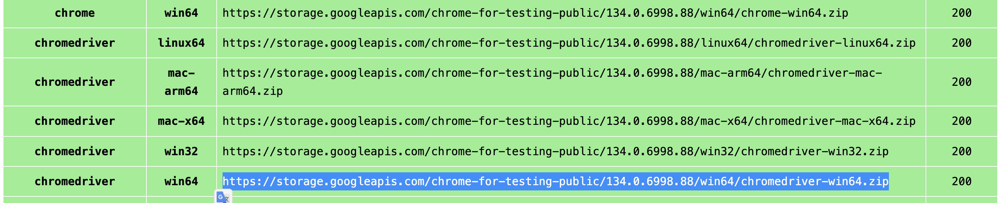
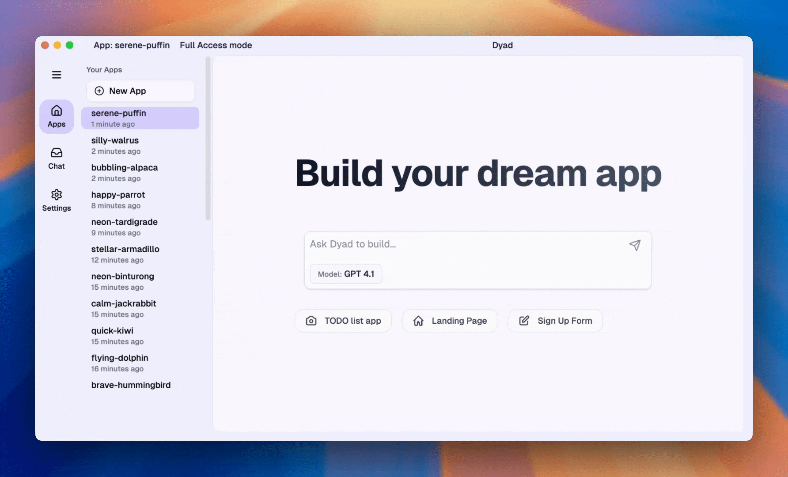
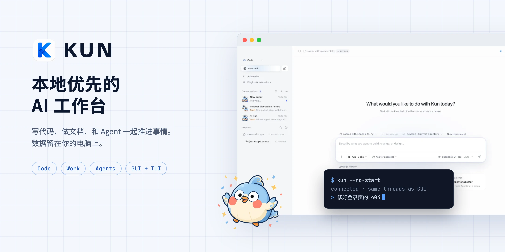

Agentes locais
Agentes que rodam na sua máquina, sem API paga.
4 links
| Vídeo | Projeto | O que faz | Pasta de origem | |
|---|---|---|---|---|
 AgenticSeek: Alternativa ao Manus TOTALMENTE GRA AgenticSeek: Alternativa ao Manus TOTALMENTE GRA |  | Fosowl/agenticSeek | 27.7k★ · agente autônomo 100% local (sem API, sem mensalidade). | curado — busca na internet |
 DYAD É A Plataforma GRATUITA MAIS PODEROSA Para DYAD É A Plataforma GRATUITA MAIS PODEROSA Para |  | dyad-sh/dyad | 22.3k★ · construtor de apps com IA local (tipo Lovable/Replit). | curado — busca na internet |
 [BASIC] Adicionando o KUN Basic ao Aliemination [BASIC] Adicionando o KUN Basic ao Aliemination |  | KunAgent/Kun | 6.4k★ · workspace de agente local para código, escrita e pesquisa. | curado — busca na internet |
| ATOMIC CHAT - IA LOCAL GRATUITA E PRIVADA | AtomicBot-ai/Atomic-Chat | 2k★ · app local com motor de inferência próprio. | curado — busca na internet |